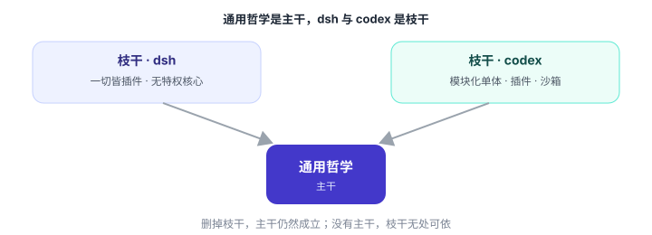
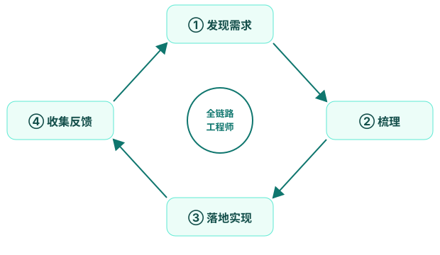
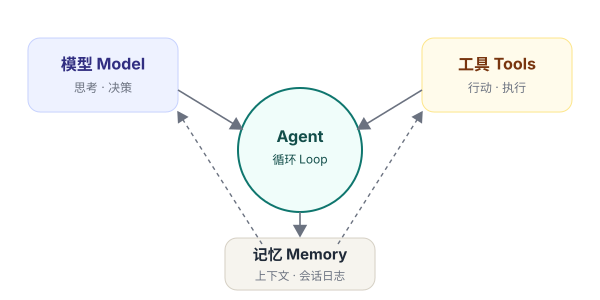

深入浅出 AI Agent
以 DeepSeek Harness 与 Codex 为双标本，沿「哲学 → 科学 → 艺术」三篇，先学会用好 Agent，再造出 Agent
这是一个软件正在学会行动的时代。大语言模型不再只是生成文字，它们开始调用工具、读写文件、执行命令、委派子任务、反思并修正自己。我们把这种「能感知、能决策、能行动、有记忆」的软件实体，称为 Agent（智能体）。
这本书想做什么
市面上的 Agent 教程大多教你「怎么调某个 API」或「怎么用某个框架」。这本书想做一件更根本的事：帮你建立 Agent 工程的心智模型——不仅能看懂一个框架，更能判断一个设计为什么好，进而自己做出好的 Agent。
为此，我们选了两个真实、自洽的开源 Agent——DeepSeek Harness 与 Codex——作为贯穿全书的双标本，并沿着一条朴素的发展规律来组织全书：
哲学回答「是什么、为什么」，科学回答「怎么运转」，艺术回答「怎么做好」。三篇环环相扣：没有哲学，机制是盲目的；没有科学，品味是空谈；没有艺术，工程没有灵魂。
主干与枝干：这本书的骨架
贯穿全书的，是一条主干——Agent 的通用哲学：心智模型、上下文纪律、行动边界、可组合性、记忆分层、人机分工、可观测、评估、自举。这些规律不依附于任何具体框架，是所有 Agent 都逃不掉的规律。
在这条主干上，长出了两根枝干——两个真实标本的设计哲学，是同一规律在不同取舍下的两种思考方向：

- DeepSeek Harness（dsh）——把「可组合」推向极致：一切皆插件、无特权核心、事件驱动、能力接缝。它是最纯粹的架构科学标本。
- Codex（codex）——把「严谨」推向极致：生产级工程化，模块化单体 + 插件系统 + 沙箱 + 服务端。它是最务实的工程标本。
读这本书时记住这个比喻：通用规律是主干（必须掌握），两个标本是枝干（用来对照）。什么时候用哪个标本？看哪个能把这条规律讲得更清楚——dsh 擅长的以 dsh 为主，codex 擅长的以 codex 为主；规律不成立的地方，就不硬上双标本。
两条线：应用线与创造线
在这条主线上，还并排织着两条线：一条应用线——先学会把 Agent 用好（好的厨子首先是老吃家）；一条创造线——再学会把 Agent 造出来。两条线有边界、不设墙，在用中做，在做中用：第 1、2 章是共用地基，第 3、4 章讲使用，第 5 章讲构建，第 6 章把两条线拧成一条链，此后三篇一路并排到终章。
一个新身份：全链路工程师
AI 时代正在消融旧的角色边界。产品经理、前端、测试、运维……这些曾经的分工，正在被一个更完整的角色覆盖：一个人，从发现需求到梳理需求，到落地实现，再到收集反馈、持续迭代，独立完成整个闭环。

这就是这本书的终点：不是把你变成「会调框架的人」，而是把你变成能闭环的人。

怎么读这本书
顺着三篇走一遍，建立完整体系。适合把它当作一门课来学。
每章末尾都有「动手做」。理论落地，才是真的学会。
把它当作案头工作台，遇到问题回来翻对应章节与附录。
每章的结构保持一致，降低你的阅读成本：
- 导语——本章要解决什么问题，一句话说清。
- 正文——用图、表、代码、类比，把概念讲透。
- 一张图——把本章内容收拢成一张可回看的结构图。
- 要点回顾——三到五条，方便复盘。
- 动手做——一个小练习，把知识变成肌肉记忆。
关于本书的编写
这本书的写作方式，本身就是它所主张工作方式的一次演示：由人定方向、提要求、做判断，由 AI Agent 协作产出，再逐步迭代打磨。你现在读到的全书概览，就是第一轮骨架——欢迎你随时调整，我们再一步步把每一章「填肉」。
那么，让我们从第一篇——哲学篇开始。